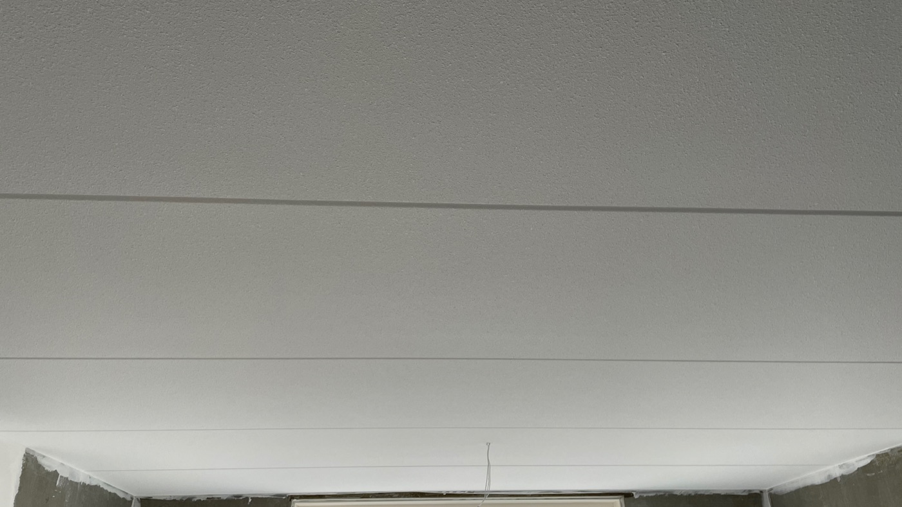

Spackspuiten
De voordeligste vorm van stucwerk, en ook nog eens snel.
Spack is een sierpleister die een strakke en sterke afwerking geeft. Aan de wanden hoeft weinig tot niets voorbehandeld te worden en u bepaalt zelf hoe fijn of grof de spack gespoten wordt.
Kies dit als u een mooie afwerking wilt en de kosten laag wilt houden. Het kan in zowel droge als natte ruimtes, thuis of in uw bedrijfspand.